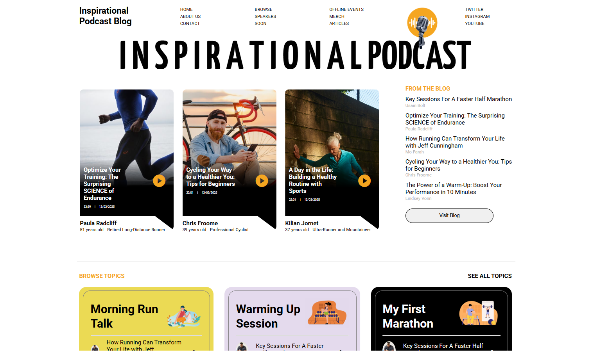
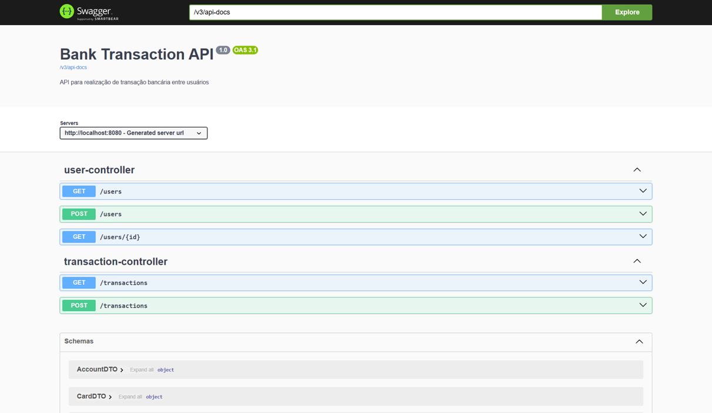
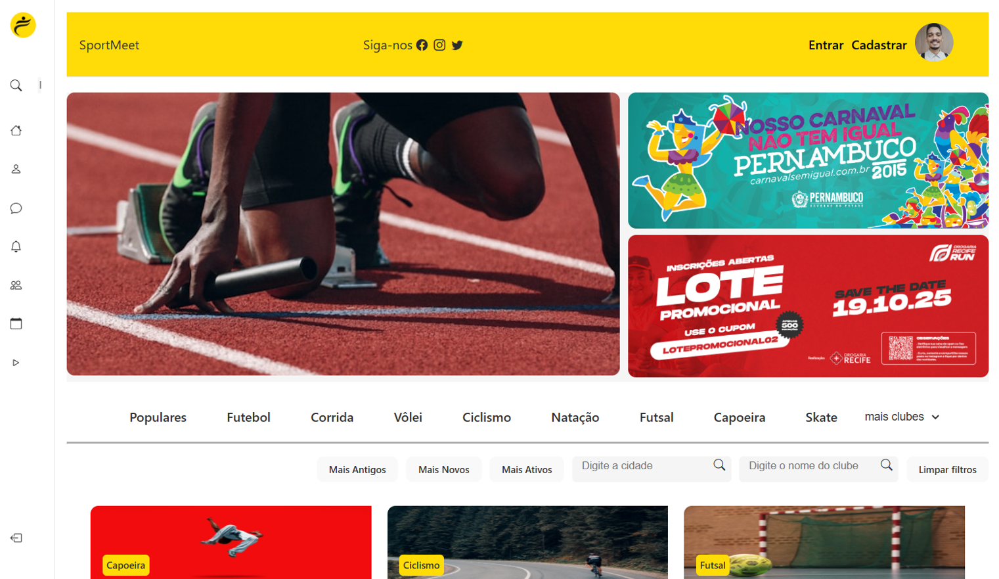
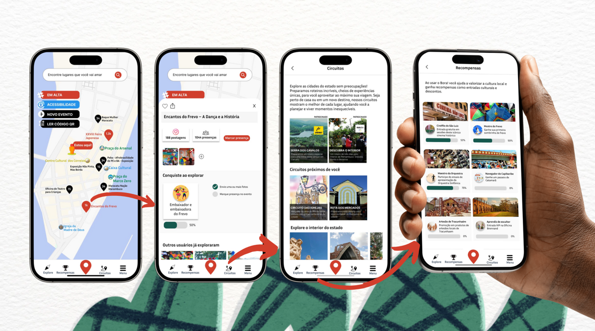

Projetos
Estes são alguns projetos que desenvolvi praticando os conhecimentos de
prototipação com Figma, desenvolvimento Front End com HTML, CSS,
utilização da biblioteca React e Framework Angular. Em back-end,
desenvolvi o projeto bankTransictionAPI que simula transferência bancária
entre clientes de um banco com utilização do Spring Boot, Java e
publicação na nuvem com o Railway.
Inspirational Podcast
inspiration-blog.vercel.app
Repositório no GitHub
O Inspirational Podcast é um blog criado para praticar e consolidar
os conhecimentos adquiridos no bootcamp Decolar Tech 2025 Avanade.
Se trata da reproduzação de um blog de podcast voltado ao esporte.
Utilizei como inspiração um template do site Dribble para
desenvolver o projeto com Angular e TypeScript.

|
BuzzTrivia
buzz-trivia.vercel.app
Repositório no GitHub
O BuzzTrivia é uma página web interativa onde os usuários podem
explorar 10 quizzes divertidos que combinam tecnologia e cultura
geek. O projeto foi desenvolvido utilizando Angular e TypeScript
como parte do bootcamp Decolar Tech 2025 Avanade promovido pela DIO.

|
bankTransictionAPI
Repositório no GitHub
Este projeto foi desenvolvido como desafio de código do bootcamp
Decola Tech 2025, com o objetivo de publicar uma API REST na nuvem
utilizando Spring Boot 3, Java 17 e Railway. Trata-se de uma
simulação de transferência bancária entre clientes de um banco.

|
Sport Meet
sportmeet.vercel.app
Repositório no GitHub
Sport Meet é uma aplicação para conectar pessoas com interesses
esportivos em comum e a plataforma está sendo desenvolvida em React.
Faz parte do Projeto Integrador do curso de ADS da Faculdade Senac.

|
Bora!App
Protótipo no Figma
O Bora! é um protótipo de uma ideia de plataforma desenvolvida para
a Residência Tecnológica do Porto Digital. "Tecnologias que
impulsionam a cultura" foi o desafio e desenvolvemos esta ideia que
busca conectar as pessoas com produtores e manifestações de cultura
na palma da mão e retribuir com recompensas aos usuários quanto mais
explorarem as cidades e os roteiros sugeridos na plataforma. Com o
desenvolvimento desta ideia, nossa Squad foi uma das 10 finalistas
entre as 54 que participaram do desafio.

|